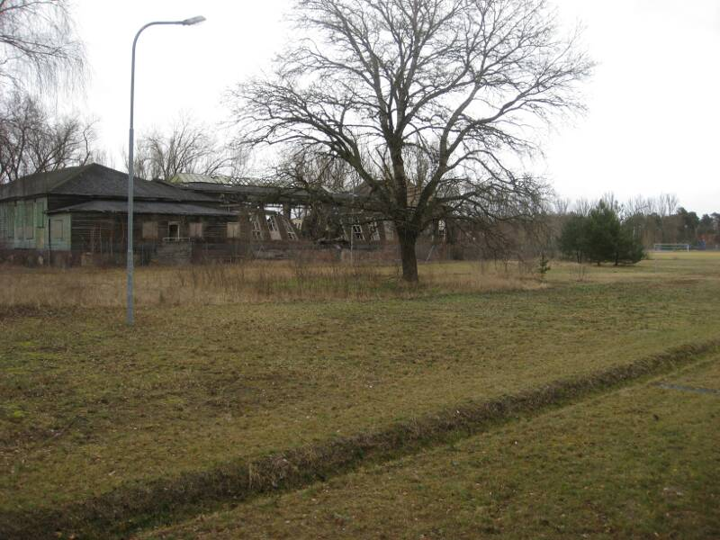

Sachsenhausen Concentration Camp
We
wanted to take one of the free walking tours of Berlin, to see
everything it had to offer during our brief time there, so we planned
carefully. We got tickets in advance and sprung out from a nearby
Starbucks into line. We were confused when the first thing we did
was get on a subway and head out to a concentration camp. I
figured it was something interesting to see, and a nice part of our
sightseeing. This is a memorial for the death marches prisoners
were forced to endure near the end of the second world war.
Here's our Scottish tour guide (note the tartan). It was cold, so it was good for her she was dressed warm.
Clearly marked walls on the way in the camp.
One of the guard towers on the way in.
Our tour group circles a model showing the layout of the camp.

We realized there was a lot of walking on this tour and wondered how much time we'd have for the rest of Berlin.
We plodded forth toward the gates leading into the camp.
Arbeit macht frei, "Work will set you free". Hopefully it helped some inmates hang on long enough to survive.

Behind
the gates is a massive watchtower. Towers were strategically
positioned to minimize the number of guards needed to oversee the camp.
Triangles,
formerly worn by resident inmates, decorate the Soviet Liberation
Memorial tower. In front is a controversial statue showing a
heroic scene of prisoners being rescued. Many say that it does
not accurately represent what prisoners really looked like when they
were rescued.
This was sculpted to provide a truer sense of what the liberators actually saw.
Preserved washing facilities.
Within
the prison these odd cartoons were drawn by Hans Fischerkoesen,
who was in an underground resistance of artists but was imprisoned by
Russians in Sachsenhausen under suspicion of collaboration with the
Nazis.
There
was an intricate layout of rooms for processing, with visibility such
that prisoners were unaware of their impending death.
Here
are the ovens used to actually burn the corpses. This was the
conclusion of our walking tour. Yes, we got in the wrong line.
I can see going back to Berlin one day, but I think I've had my
fill of concentration camps.
Back